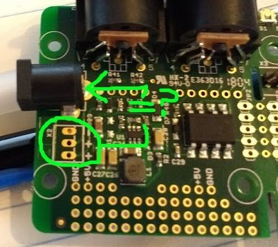
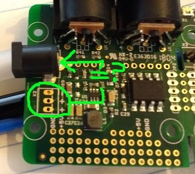
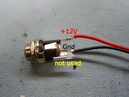

Is this an option to add another external power jack using the same electrical configuration as the onboard jack (7-15V)?


Is this an option to add another external power jack using the same electrical configuration as the onboard jack (7-15V)?

I wonder about that too. I think the X2 power connection is the same as the main barrel plug but without the reverse polarity protection diode. There is some info on this post but it's about an older version of the axoloti board that has only 2 solder pads for X2.
That is true yes. My Solution was to put wires from the + - of the dc jack to some of the unused pins on the bottom of your picture. Works perfectly fine.
Update for anyone finding this later...
I attached a barrel jack to these inputs and they work great with a 9V power supply.
"X2 power connection is the same as the main barrel plug but without the reverse polarity protection diode". Is this true? I want to connect an enclosure DC barrel and I am not sure about what is the best approach. I want not to take any risk of damaging my board.
This is the barrel:

Thanks
On a current (V1.2) Axoloti, X2 is parallel to the main barrel plug. That means, input through X2 is also protected (by D2) against reverse polarity, same as the barrel plug. At least that's what the schematic says, and a look at the actual hardware seems to confirm it.
Another quick question... What is the pupose of the third pin? The avaible board socket has three pins wired. Photo said "not used" but I am curious about it. I have been seaching online and I didn´t find clear information. Thanks
The third pin on these sockets is used for a battery connection. When no plug is inserted, one of the other pins pushes against the third pin and forms a connection. Inserting a plug breaks this connection.
So, if you have a battery holder in your device, you connect one pole of the battery to the third pin of the socket. Then, while no external supply is plugged in, your device is powered by the battery. When the supply cable is plugged in, the battery is automatically turned off.
Of course, if you want to use it this way, you have to first find out which of the other two pins the third one connects to.
Seems the way X1 is wired might have been an oversight. I can't think of a downside of having an inserted plug disconnect the X2 ground connection.
One plug disconnecting the other would certainly be nice. But interrupting the ground connection is a bit risky. If it's just a battery pack that's OK, but anything else (external power supply, "wall wart", ...) might have a different ground connection somewhere (ground loop), so trying to interrupt the ground pin would not work and give weird results.
Actually, the Axoloti seems to be prepared for X2 to disconnect plus from CN1: there is a trace from CN1 to the middle (plus) pin of X2, and then another trace from the outside plus pin of X2 to the rest of the circuit (R3, R4, D2, ...). Both plus pins of X2 are only connected on the backside of the PCB. So if you scratch through the trace there, you could connect one of those switching sockets to X2 (if it switches plus and not ground) and have the plug in your new socket take precedence over CN1.
I was thinking of the case where a battery is connected at X2, and is disconnected when power is plugged into X1, like on zillions of stomp boxes.
Yes, the Axoloti missed one cool trick there, by not routing the ground pin of X2 via the third (switched) pin of the power socket CN1.
But it looks like said third pin is not connected to anything on the board, so if you solder the minus of the battery to it, it should work as expected (i.e. automatically disconnect the battery when an external power supply is plugged in).